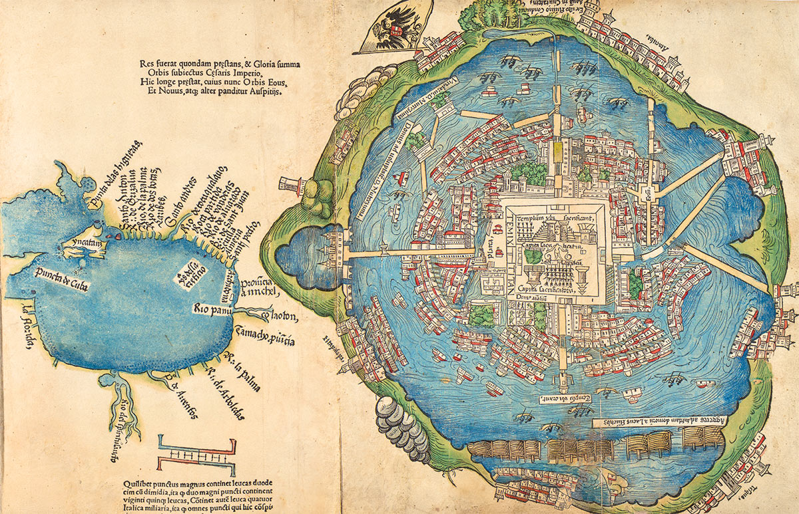

Spanish-Aztec relations began in 1519 with Hernan Cortes’s landing in the Aztec Empire. The two sides first formally met in November 1519, with Moctezuma II welcoming Cortes. However, the seemingly friendly countries developed many rifts in their relationship, ending in severed relations and Hernan Cortes’s conquest of the Aztec Empire. Initially, the Aztecs greeted the Spanish enthusiastically. However, Hernan Cortes wrote of his distrust of the native population. Soon after Cortes met with Moctezuma II, he imprisoned him inside his own palace. Later events only continued to deteriorate the Aztec-Spanish relationship, like the Massacre at the Great Temple. In the end, Hernan Cortes would defeat the Aztec Empire, resulting in mass deaths in the territories formerly held by the empire.